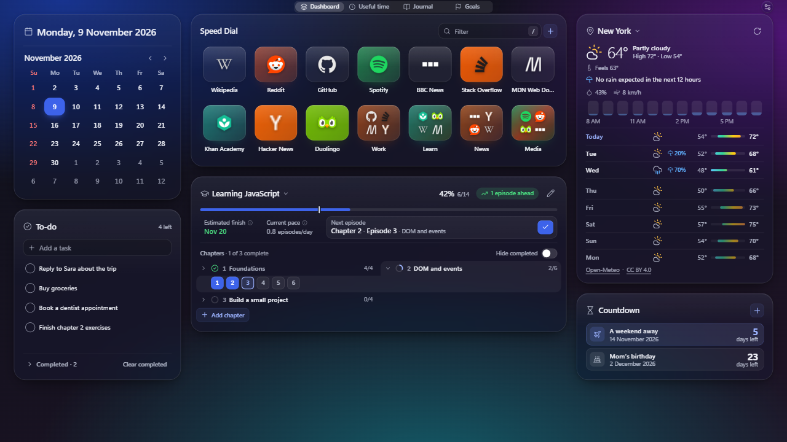
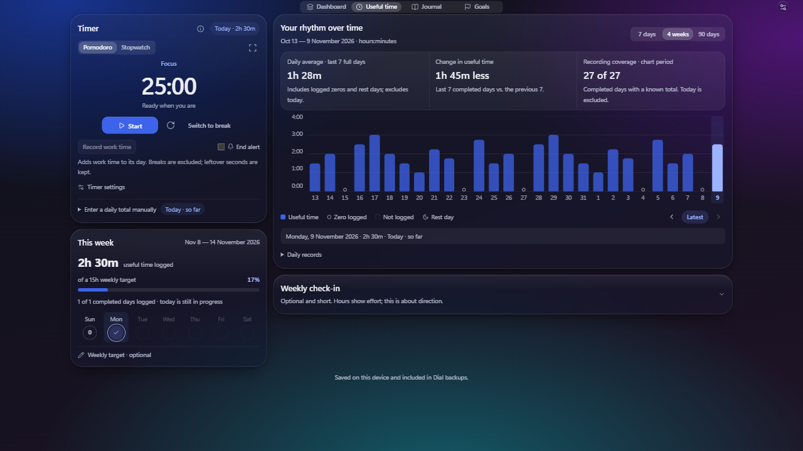
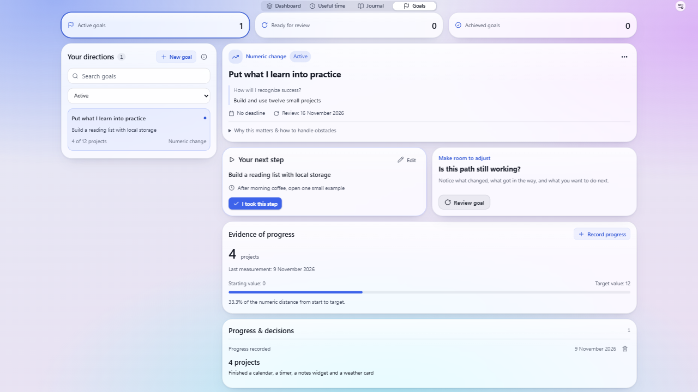
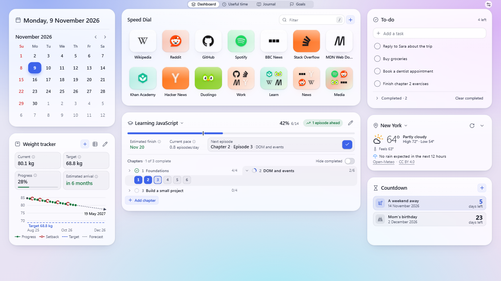

Dial — a calm, private new tab for Chrome
Open a new tab and your favorite sites, today’s date, the weather and your focus tools are already there. No account, no ads, no tracking, and it keeps working offline.




Screenshots show example shortcuts as they appear in Dial. Site names and icons belong to their owners; Dial is not affiliated with or endorsed by any of them.
What you get
- Speed dial with folders, drag-and-drop, a / filter, keyboard control and Undo.
- Focus: a Pomodoro timer and stopwatch, a full-screen clock and a log of the time you actually worked.
- Plans: goals with a clear next step, countdowns, and a course tracker with an estimated finish date.
- Weight tracker (optional, off until you switch it on): log your weight, follow it on a chart and see an estimated date for reaching your target.
- Calendar and weather: Gregorian, Persian (Shamsi) and Hijri dates side by side; a 7-day forecast for the city you choose.
- Private journal that stays on your device.
- Your data is safe: automatic local backups before every update, one-click export and restore.
Privacy in one paragraph
Dial has no account system, server, ads or analytics. Small records sync through your own Chrome account when Chrome Sync is on; your journal, goals and time log stay on your device. Only two features talk to outside services: the weather (Open-Meteo, after you choose a city) and missing site icons (Google’s favicon service, which you can turn off). Read the full privacy policy.
Help & feedback
Questions, bugs or ideas? Email sakha1370@gmail.com or use the Support tab on Dial’s Chrome Web Store page. Lost something after an update? Open Settings → Data → Automatic backups → Restore.